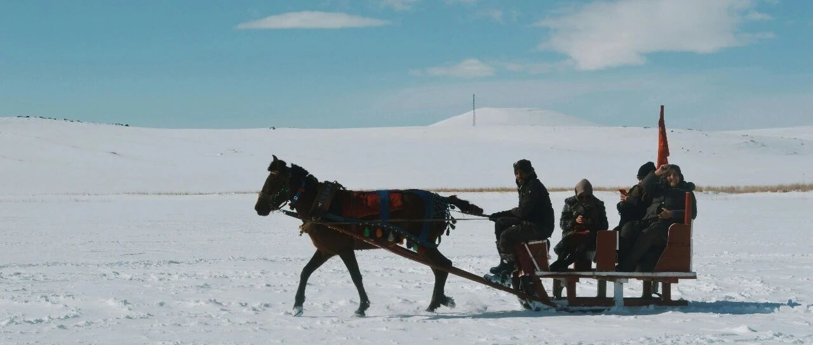

倒车接人~
美联储降息25个基点。
美联储今年连续第三次降息了，共降了100个基点，目前利率区间4.25-4.5%，符合我去年的预判。
明年，美联储有可能只降息2次，低于市场预测的四次。
如果是这样的话，那2026年初，美联储的利率会在3.5-3.75%左右，高于之前预判的3.2-3.5%；
过去三个月，老美的劳动力市场表现不错，就业岗位平均增长17.3万人。
由于收窄了明年的降息幅度和频率，美股大暴跌:
纳指跌了3.56%，标普跌了2.95%；科技股更是关灯吃面。
亚马逊跌了4.6%，收盘价220美元；特斯拉跌了8.28%，收盘价440美元；博通跌了6.91%，收盘价223.6美元；
谷歌、微软、Meta都跌了3.5%+，收盘价分别为190、437、597美元。
苹果、台积电、AMD跌了2%+，收盘价分别为248、195.5、121.4美元。
AMD我设置的120.5美元，成功买入，目前仓位占比0.75%，成本129.45美元。下一个设置买入价115美元。
我个人有一点看法，觉得对大多数来说还挺重要的:
资金体量不大（百万美元以内）的人，只要把重点放在美股七巨头+纳指100和标普500（QQQ和SPY）上就行，其他的不需要看。
好钢用在刀刃上，集中在收益最大化的个股和宽基指数上，不要分散到其他板块和个股。
MSTR跌了9.5%，收盘价349.6美元。我现在备孕，没有熬夜看盘，都是提前设置好操作，因此错过了做空它的机会，有点小可惜。
其他持有的消费股和生物医药股，普遍跌幅在0.5-1.7%之间，没操作。
联合健康475没买到，反弹了，涨了2.92%，收盘价499.72美元。
还是那句话，对于投资来说，最重要的是资金、耐心和勇气。
资金备足，遇到这类大跌的时间点，想逢低买入就可以操作，有弹药，怎么都不慌。
耐心等，遵守投资纪律，不强行上车，市场走到一定程度，总会震荡，震荡就有机会:
基本面没有恶化，只是由于市场预期短时间内出现波动导致下降，可谓“倒车接人”，聪明的投资者往往会选择分批逢低买入。
做投资就像猎人狩猎，需要有耐心。又不是猎物，没必要整天上蹿下跳，把自己整得像个猎物一样活络。
勇气，也就是胆识。胆识胆识，胆在识前，比认知更关键的是执行，很多人有认知，但畏惧风险不敢做。
知是行之始，行是知之成，三十而立之后，知道该做什么，还要身体力行地去做，两者皆有，才会源源不断的受益。
美股的正确投资方式，是中长期去持有，期间顶多做一些短期内的波段套利。
不懂的人，去把美股七巨头和纳指、标普这九个近15年的走势图拉出来看，就懂了。
前天应邀去朋友家，他的公司遇到了点问题。
实体企业，年营收近百亿，净利润约三个点，现在的环境，很难，还要提防“远洋捕捞”和地方趋利性执法。
他现在经常应付各种检查和“供金”，疲惫不堪。我们聊了许久，只能感叹难。
人间历尽艰辛的飞升者，一剑开天门后，以为是鲤鱼跃龙门，其实只是天庭餐桌上的食材而已。
两三年前，我劝他适时收手。但那会，很多身边的朋友都没理解，听不进去，毕竟环境不一样。
我这种人，选择向科技靠拢，而不是政治，是有我自身的短板，自己不喜欢，也不认为、不想要自己的孩子往这个方向去。
天子脚下，再牛逼的人不过也是一句话的脆弱，再大的事其实也是一句话的简单。
昨天花园终于改造好了，把花园里一部分的土换掉，田野里的土+营养土混合，做了一块农田出来。
一共5块地，每块约25-30平米，种菜。三个孩子一人一块，我和我媳妇各一块。
各自领到了自己的责任田，我准备种茼蒿和豆腐菜，我媳妇说她要种小白菜，老大老二和小儿子也各自选了自己喜欢的菜。
我拟了一些奖惩措施，责任田不能荒废，杂草丛生要罚款，种得好有奖金。
希望他们不要整天困守在书桌前，能有一些其他的乐趣和活动，能培养更好的责任感和担当，做事有始有终。
昨天的更新写到“教育更多的，是划了一条道，并确保社会的绝大多数人都能沿着这条道走，以此能够极大的减少治理成本，也尽可能的消除了未来的不可预知和意外情况。”
说到底，也就是说教育是一种工具，一种手段，而且随着时间推移，会越来越上难度，层层设置壁垒。
如果都能通过教育改变命运，那谁来做牛马？
所以不要太功利化，对孩子不要有太高的期待，把期望值都压在他们身上，容易压垮孩子。
我看了看现在孩子的教材，发现现在要自学，很有难度，壁垒太多了。
知识点都非常碎片化，孩子想要自己去打通壁垒很不现实，除非家长自己有学识，要不就是请家教或外部的教育机构，不系统、碎片化，只会有利于发展教育经济。
比如圆的“周长”，除了这两个字，啥也没提到，没有人引领的话，没接触过的孩子压根不知道周长的具体定义；
再比如，地理的大气环流和洋流这些，以前的教材非常详细，整个立体感很丰富，现在就几句话。
我们做父母的尽自己所能给孩子创造好的条件了，才能要求孩子也尽力。
这样以后即便孩子没什么成就，感叹以前没好好读书的时候，也只会怪自己不努力，不会怪咱们做家长的没给他们创造条件。
而不是生下孩子，然后把期望值都压给他们。那太残忍，成年人都觉得重压之下难以喘气，孩子更难以背负。
鸡娃不如鸡自己，以后他们的机会，很显然要比我们少。都努力学好英语，有机会就往外看看，这在未来特别重要。
就这样吧。